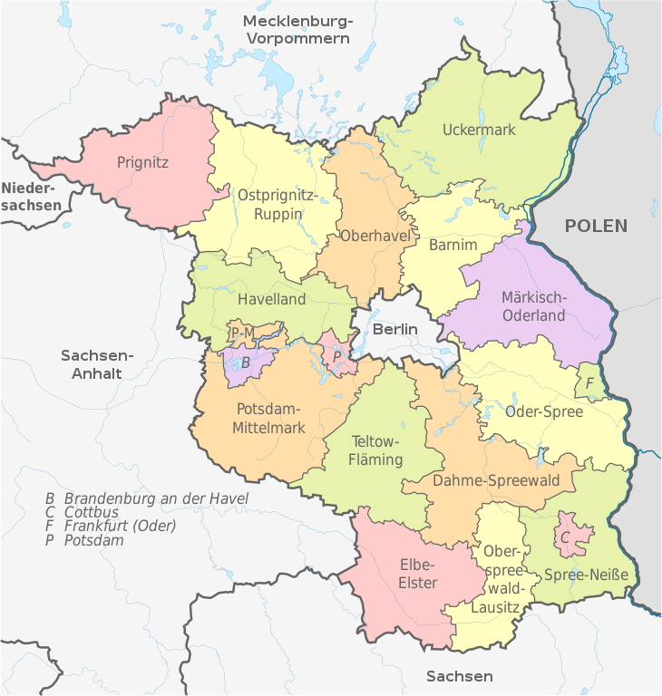

Brandenburg ist ein Land im Nordosten der Bundesrepublik Deutschland. Die Landeshauptstadt und bevölkerungsreichste Stadt ist Potsdam, weitere wichtige Zentren sind Cottbus, Brandenburg an der Havel und Frankfurt (Oder). Brandenburg umschließt in seinem Zentrum die deutsche Hauptstadt Berlin und bildet mit dieser gemeinsam die europäische Metropolregion Berlin/Brandenburg, in der rund 6 Millionen Menschen leben. Mehr als ein Drittel der Fläche Brandenburgs wird von Naturparks, Wäldern, Seen und Wassergebieten eingenommen. Als Gründungsjahr der Mark Brandenburg gilt 1157, in dem sich der Askanier Albrecht der Bär mit der Eroberung der Brandenburg das Gebiet aneignete und es zum Bestandteil des Heiligen Römischen Reiches machte. Von 1415 bis 1918 stand die Region unter der Herrschaft der Hohenzollern. Von 1701 bis 1946 entwickelte sich die Mark zum Kernland Preußens. Die 1815 geschaffene Provinz Brandenburg bestand bis 1947. Zu dieser Zeit erreichte Brandenburg seine größte territoriale Ausdehnung. Nach 1945 wurde aus dessen Teil östlich der Elbe und westlich von Oder und Neiße erstmals ein Land Brandenburg, das 1952 auf verschiedene DDR-Bezirke aufgeteilt wurde. Als Land der Bundesrepublik Deutschland gründete sich Brandenburg 1990 erneut. Zu den wesentlichen Wirtschaftszweigen in Brandenburg gehören unter anderem die Landwirtschaft, die Energiewirtschaft, Industrien der Luft- und Raumfahrt, der Tourismus sowie die Filmwirtschaft.
Das Land Brandenburg liegt im Nordosten der Bundesrepublik Deutschland. Es grenzt im Süden an Sachsen, im Westen an Sachsen-Anhalt, in der Mitte an Berlin, im Nordwesten an Niedersachsen, im Norden an Mecklenburg-Vorpommern sowie im Osten an die Republik Polen. Brandenburg verfügt über fünf Exklaven, die innerhalb der Grenzen von Sachsen-Anhalt liegen und zu den Gemeinden Buckautal und Ziesar gehören. Brandenburg ist mit einer Gesamtfläche von 29.654 km² das nach der Fläche fünftgrößte Land Deutschlands und mit einer maximalen diagonalen Ausdehnung von 291 km, einer Nord-Süd-Ausdehnung von 244 km und einer Ost-West-Ausdehnung von 234 km gleichzeitig das größte der neuen Länder. Das Kerngebiet Brandenburgs wird auch mit dem historischen Namen Mark Brandenburg bezeichnet.
Die Länder Berlin und Brandenburg bilden wirtschaftsgeografisch in ihrer Gesamtheit die europäische Metropolregion Berlin/Brandenburg. In dem auch Hauptstadtregion Berlin-Brandenburg genannten Ballungsraum lebten im Jahr 2019 etwa 6,2 Millionen Einwohner. Die Agglomeration Berlin mit 4,6 Millionen Einwohnern (2019), dessen engerer Verflechtungsraum um Berlin als „Speckgürtel“ bekannt ist, umfasst Berlin und Teile Brandenburgs. Dies entspricht der für Brandenburg typischen Ausrichtung der Infrastruktur wie Autobahnen und Hauptbahnstrecken auf die inselförmig im Land gelegene Bundeshauptstadt Berlin.
SaschenAußerhalb der größeren Städte wie Brandenburg an der Havel im Westen, Frankfurt (Oder) im Osten und der nach Potsdam einwohnerreichsten Stadt Cottbus im Süden ist das Land relativ dünn besiedelt. Den Süden des Landes bilden die Niederlausitz, kleine Teile der Oberlausitz und das Elbe-Elster-Land. Zum Land Brandenburg gehören westlich das Havelland, südlich von Berlin der Teltow und nordöstlich der Barnim. An den Grenzen liegen im Norden die Oberhavel (mit dem historisch bis 1950 zu Mecklenburg gehörigen Fürstenberger Werder), im Nordwesten die Prignitz, im Nordosten die Uckermark, im Osten das Oderbruch und im Südwesten der Fläming.
Das Land Brandenburg liegt im Norddeutschen Tiefland und wurde an der Erdoberfläche entscheidend durch die wiederholten Vorstöße des skandinavischen Inlandeises während des Eiszeitalters geprägt. Es stehen daher fast ausschließlich kalt- und warmzeitliche Ablagerungen an. Am verbreitetsten sind Geschiebemergel und Schmelzwassersande. Typisch für die Oberflächenformung sind die Elemente der glazialen Serie. Zu ihren Landschaftsformen zählt das Urstromtal. Diese zeigen hierzulande eine weltweit einmalige Häufung: Netze-Randow-Thorn-Eberswalder, Warschau-Berliner, Glogau-Baruther und Breslau-Bremer Urstromtal.
Aufgrund der Vielgestaltigkeit der eiszeitlichen Ablagerungen in Brandenburg sind die daraus entstandenen Bodengesellschaften sehr vielfältig. Ihre Ertragsfähigkeit reicht von extrem nährstoffarm und unfruchtbar bis hin zu sehr fruchtbar. Dennoch überwiegen flächenmäßig, vor allem im mittleren und südlichen Brandenburg, die nährstoffarmen Sandböden, die dem Land sein charakteristisches Gepräge geben.
Brandenburg gilt besonders im Süden als Rohstofflieferant, entlang des Lausitzer Grenzwalls befinden sich große Braunkohlelagerstätten, im Südosten um Spremberg wurden tiefe Kupferlagerstätten gefunden. In der Fläche wird vereinzelt Erdöl nachgewiesen.